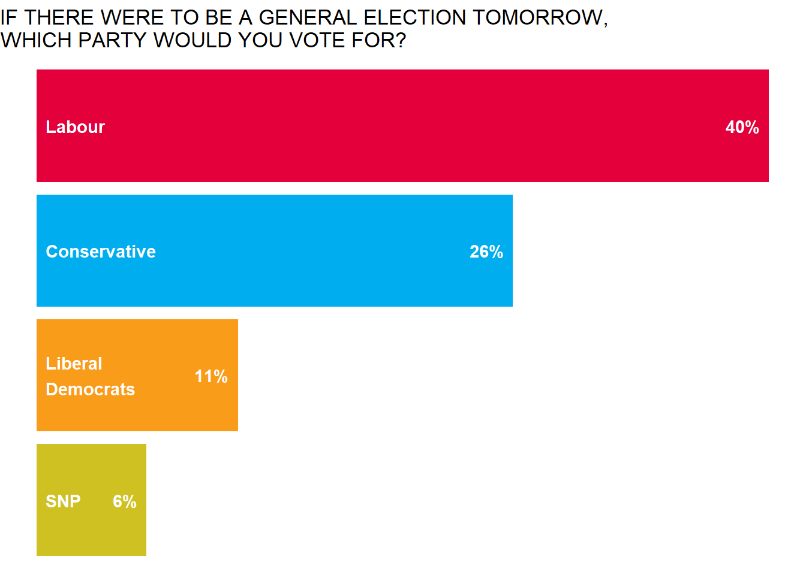
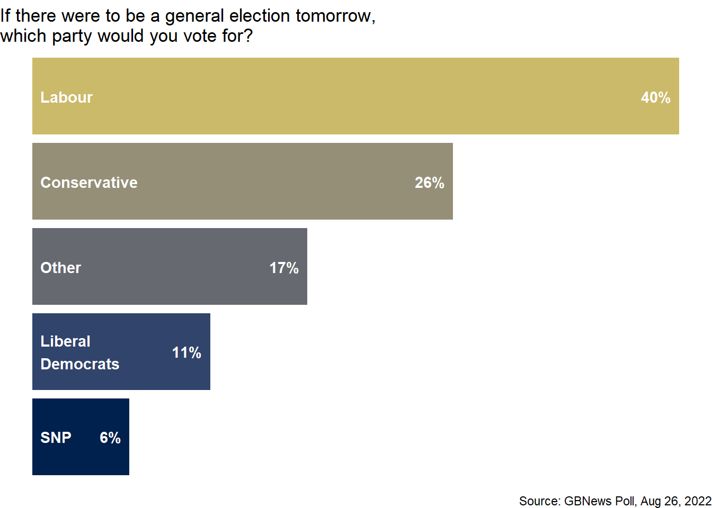

library(tidyverse)AE 08: Data science ethics - Misrepresentation
Suggested answers
Application exercise
Answers
Packages
Part 1 - People’s Poll
GB News tweeted the following on Aug 26, 2022.
- Question: What is wrong with the visualization above?
The bars are not drawn to scale, hence are misleading
Your turn (5 minutes): The data from this poll are at
data/gbpoll.csv. First, load the data and confirm the number of responses match those mentioned in the tweet.gbpoll <- read_csv("data/gbpoll.csv")Rows: 1235 Columns: 1 ── Column specification ──────────────────────────────────────────────────────── Delimiter: "," chr (1): party ℹ Use `spec()` to retrieve the full column specification for this data. ℹ Specify the column types or set `show_col_types = FALSE` to quiet this message.nrow(gbpoll)[1] 1235Then, confirm that the proportions of intended votes match those mentioned in the tweet.
gbpoll |> count(party) |> mutate(prop = n / sum(n))# A tibble: 5 × 3 party n prop <chr> <int> <dbl> 1 Conservative 321 0.260 2 Labour 494 0.4 3 Liberal Democrats 136 0.110 4 Other 210 0.170 5 SNP 74 0.0599Demo: Recreate the visualization from the tweet. You do not need to worry about matching the colors precisely and your bars should be correctly scaled.
gbpoll |> count(party) |> mutate( prop = round(n / sum(n), 2), prop_char = paste0(prop*100, "%") ) |> filter(party != "Other") |> mutate(party = fct_reorder(party, prop)) |> ggplot( aes( y = party, x = prop, fill = party ) ) + geom_col(show.legend = FALSE) + scale_y_discrete(drop = TRUE) + theme_void() + geom_text( aes(label = str_wrap(party, 10)), x = 0.005, hjust = 0, color = "white", fontface = "bold" ) + geom_text( aes(label = prop_char), nudge_x = -0.005, hjust = 1, color = "white", fontface = "bold" ) + scale_fill_manual(values = c("#D0C123", "#F99C1A","#00AEEF", "#E4013B")) + labs( title = str_to_upper("If there were to be a general election tomorrow,\nwhich party would you vote for?") )
Your turn (10 minutes): Improve the visualization. State the improvements you made and why you made them. Discuss how these improvements help make the plot less misleading.
gbpoll |> count(party) |> mutate( prop = round(n / sum(n), 2), prop_char = paste0(prop*100, "%") ) |> mutate(party = fct_reorder(party, prop)) |> ggplot( aes( y = party, x = prop, fill = party ) ) + geom_col(show.legend = FALSE) + scale_y_discrete(drop = TRUE) + theme_void() + geom_text( aes(label = str_wrap(party, 10)), x = 0.005, hjust = 0, color = "white", fontface = "bold" ) + geom_text( aes(label = prop_char), nudge_x = -0.005, hjust = 1, color = "white", fontface = "bold" ) + scale_fill_viridis_d(option = "E", end = 0.8) + labs( title = "If there were to be a general election tomorrow,\nwhich party would you vote for?", caption = "Source: GBNews Poll, Aug 26, 2022" )
Part 2 - Private sector
The following chart was shared by @GraphCrimes on Twitter on September 3, 2022.

Note
This exercise has been moved to HW 3. Suggested answers will be released with HW 3 answers.
- Question: What is misleading about this graph?
- Your turn (6 minutes): If you needed to recreate this plot, with improvements to avoid its misleading pitfalls, what data do you need? How many variables? How many observations? Can you find the data online? Try looking for it for at least 3 minutes with a partner.
- Demo: Load the data for this survey from
data/survation.csv. First confirm that the data match the percentages from the visualization. Then, recreate the visualization, and improve it. Does the improved visualization look different than the original? Does it send a different message at a first glance?